我要栽9棵树，请你帮帮忙
小道具趣味问题
6枚硬币
如下图所示，先将硬币排列成平行四边形，然后按照箭头指示，移动各枚硬币。
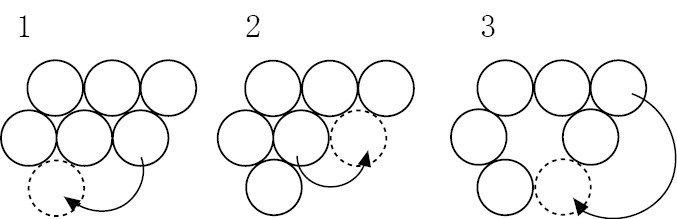
三角形变直线
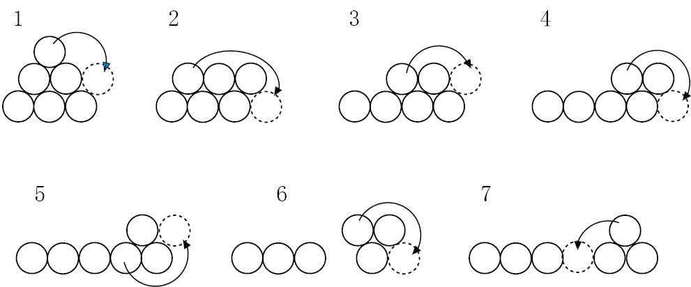
变化无穷的“水”
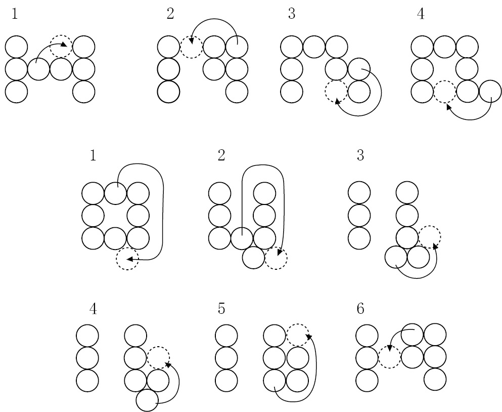
5枚一便士硬币
杜德尼的解法是先将一枚硬币平放到桌面上，再将两枚硬币平放到第一枚硬币的上方，然后让剩下两枚硬币顶部互相依靠站立在第一枚硬币上，同时让它们的底部或接近底部的位置与另外两枚硬币接触。只有心灵手巧的人才能做到，但这种解法的确符合题意。藤村幸三郎在《东京趣题集》中称，他的一名读者想出了另一种解法，只需要让一枚硬币竖立即可解决问题。
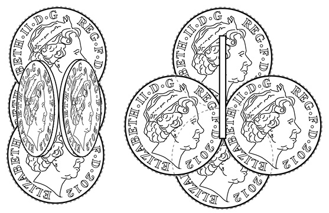
栽10棵树
这道题要求我们把两排硬币（每排5枚）变成5排，每排4枚硬币。
因为只能改变4枚硬币的位置，所以合乎情理的做法是从一排硬币中取出一枚（使之变成第一个包含4枚硬币的排），然后从另一排5枚硬币中取出3枚。
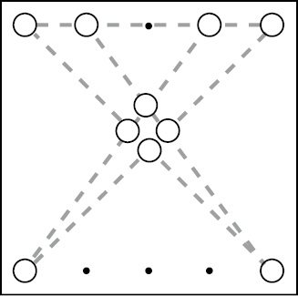
从上图可以看出，第一排4枚硬币与另一排两枚硬币两两相连，就可以形成余下的各包含4枚硬币的4排。在这个方案中，我移动了上面一排正中间的那枚硬币，以及下面那排中间的三枚硬币。实际上，我们移动上面（或下面）那排中的任意一枚硬币，再移动下面（或上面）那排中的任意三枚硬币，都可以完成题目。以下是通过移动不同硬币完成题目的两种解法。
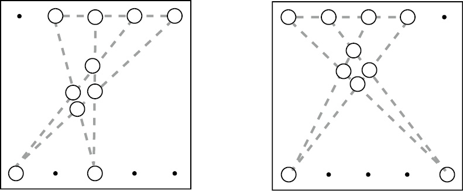
那么，一共有多少种解法呢？从一排5枚硬币中选取一枚有5种选法，选取三枚有10种选法，因此从上面一排选一枚并从下面一排选三枚硬币，一共有50（5×10）种选法。此外，从下面一排选取一枚并从上面一排选取三枚，又有50种选法。因此，本题一共有100种解法。
我可以接受这个答案。但是，如果有人发现这100种解法又分别有24种完成方法（因为移动的4枚硬币有24种排列方式），那么我还要给他加分！比如，我们以上面第一个解法为例。在这个解法中，被移动的4枚硬币形成了一个方块。我们从最上方的那枚硬币开始，按顺时针方向，将这4枚硬币分别编号为A、B、C、D。当它们以A、B、C、D的顺序排列时，我们有一个答案，当它们以A、B、D、C或A、C、B、D等不同顺序排列时，我们又会得到不同的答案，而A、B、C、D一共有24种排列组合。
因此，解法共有100×24= 2 400种。
以下是杜德尼绘制的树木排列图，每幅图中的10棵树排成5行，每行有4棵树。
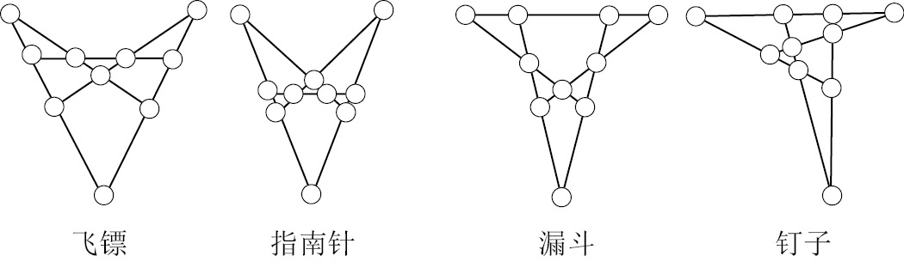
空间争夺赛
如果采用下面这个方法，先手玩家肯定获胜。
第一名玩家先将第1枚硬币放到桌子的正中央。接下来，无论第二名玩家将硬币放到哪个位置，第一名玩家只需在相对的位置放下另一枚硬币即可。如下图所示，如果第二名玩家将硬币放在A点，则第一名玩家放到A'点。同理，如果第二名玩家将硬币放在B点或C点，则第一名玩家可以放在B'或C'点。
由于一开始时桌面上没有硬币，所以只要第二名玩家将一枚硬币放到桌上，第一名玩家就可以在相对的位置上放下另一枚硬币。所以，第一名玩家永远不会输，而第二名玩家最终会发现桌子上再也找不到空白位置了。
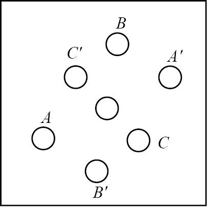
如果你希望利用雪茄来玩这个游戏，那么在放第一根雪茄时，就必须让它竖立在桌面上，而不能让它平躺放置，因为雪茄的两头是不一样的——一头是平的，另一头呈锥形。（你应该庆幸我把雪茄换成了硬币。因为在当今社会，即使经常混迹伦敦俱乐部的人也未必掌握旋转对称的知识。）
如果第一名玩家将雪茄平躺放在桌子中间（如图所示），第二名玩家在紧贴着雪茄锥形一端的D点放下一根雪茄，那么第一名玩家在D'点放下另一根雪茄时，就无法保证它不与中间那根雪茄接触。而换成硬币后，则不存在这个问题。
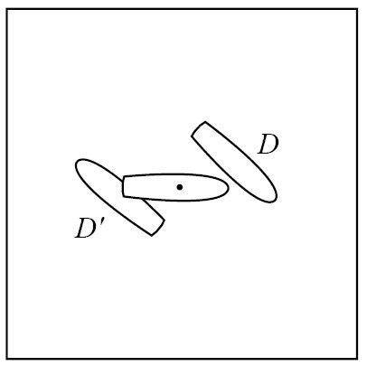
泰特的棘手问题
第一道泰特问题解法如下：
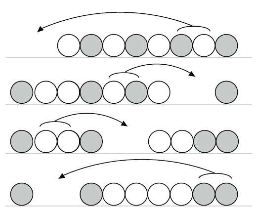
5枚硬币的泰特问题解法如下：
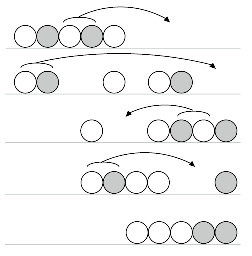
4摞硬币
如下图所示，按数字指示移动硬币。图中双线表示两枚硬币叠放在一起。
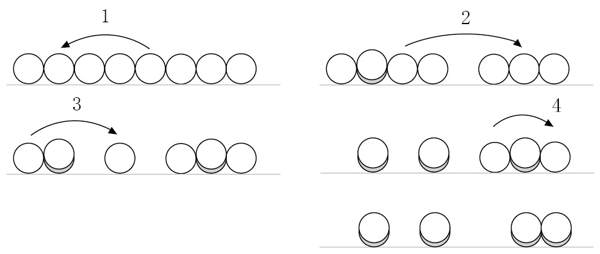
青蛙和蟾蜍
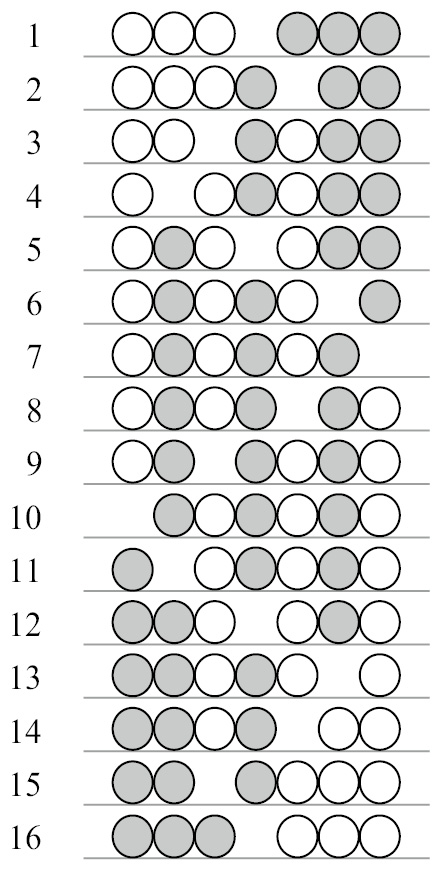
三角跳棋
同前面的解法一样，先拿掉2号位硬币。令人想不到的是，这个解法的第一步及最后一步都与6步解法相同。它的巧妙之处在于第3步：不能一路跳到底。
1．7号位硬币跳到2号位。
2．1号位硬币跳到4号位。
3．9号位硬币跳到7号位，再跳到2号位。
4．6号位硬币跳到4号位，再跳到1号位，之后跳到6号位。
5．10号位硬币跳到3号位。
看不见的硬币
如果那名观众告诉你有x枚硬币正面朝上，那么你可以从这10枚硬币中拿出x枚，并将它们全部翻转。这样一来，你就成功地将这10枚硬币分成了两组，而且两组中正面朝上的硬币数量相等。
例如，假设那名观众告诉你有3枚硬币正面朝上，你可以任意取出3枚，组成一组，然后将它们全部翻转。此时，这些硬币与剩余硬币中正面朝上的硬币数量就会相同。无论你选择的3枚硬币中本来有几枚正面朝上，这个方法都能取得成功。
同理，假设那名观众告诉你有5枚硬币正面朝上，你可以任意取出5枚，组成一组，然后将它们全部翻转。此时，这些硬币与剩余硬币中正面朝上的硬币数量也会相同。无论你选择的5枚硬币中本来有几枚正面朝上，你都可以取得成功。
注意，你无法知道你翻转的那组硬币以及剩余硬币中有多少枚正面朝上，你也没说你知道。你能确定的只是这两组硬币中正面朝上的硬币数量相同。这个解法极其简单，但是给人一种魔术般的神奇感觉。
大家可以再尝试几次。比如，让3枚硬币正面朝上，然后按照不同的正反面组合选择3枚硬币，再将它们翻转。多试几次，你就会明白其中的道理。
不过，我们需要具备一定的代数知识，才能证明它的正确性。
假设那名观众告诉你这10枚硬币中有x枚正面朝上。任选x枚硬币，并将它们定义为A组，将剩下的硬币定义为B组。如果A组中的硬币都是正面朝上，那么B组都是反面朝上。将A组全部翻转之后，这些硬币全部变成反面朝上。此时，两组中正面朝上的硬币数量相等，都是0。
再假设A组中没有正面朝上的硬币。这就意味着正面朝上的x枚硬币全部在B组。在我们将A组翻转之后，A组中将有x枚硬币正面朝上，B组中也有x枚硬币正面朝上，两者数量再次相等。
接下来，我们假设A组中既有正面朝上的硬币，又有反面朝上的硬币。设A组中有y枚硬币反面朝上，则该组中正面朝上的硬币数为(x – y)，从而说明B组中正面朝上的硬币数为y。因此，将A组全部翻转之后，A组中将有(x – y)枚硬币反面朝上，正面朝上的硬币数为y，与B组相同。
玩这个小魔术时，硬币总数可以任意选择，不仅限于10枚。如果你知道一共有多少枚正面朝上，就可以从全部硬币中选取那么多数量的硬币，并将它们全部翻转，得到的两组硬币中正面朝上的硬币数量相同。
100枚硬币
本题的解法之所以有效，是因为100是一个偶数。
将这些硬币从1~100编号。如果佩妮先拿，那么她能拿到所有奇数编号的硬币，或者所有偶数编号的硬币。如果她希望拿到所有奇数编号的硬币，那么在一开始的时候她可以拿1号硬币。接下来，鲍勃可以在2号和100号硬币中任选一个，但无论他如何选择，再次轮到佩妮时她都可以拿到一枚奇数编号的硬币。她拿了这枚硬币后，又轮到鲍勃做选择，此时这排硬币的首尾两端都是偶数编号的硬币。因此，鲍勃只能再拿一枚偶数编号的硬币。就这样，佩妮拿奇数，而鲍勃拿偶数，直至所有硬币被二人拿完。同理，如果佩妮希望拿到所有偶数编号的硬币，她一开始就应该选择100号硬币。接着，鲍勃只能从1号和99号硬币中任选一个，佩妮再次获得拿偶数编号硬币的机会。
因此，佩妮需要计算所有奇数编号硬币的总面值，以及所有偶数编号硬币的总面值，然后比较两者的大小，从而决定应该拿所有奇数编号还是所有偶数编号的硬币。如果奇数编号硬币的总面值与偶数编号硬币的总面值不同，那么佩妮肯定可以获胜。如果奇数编号硬币与偶数编号硬币的总面值相同，那么佩妮选择奇数或者偶数编号，最后拿到的钱都与鲍勃相同。因此，佩妮至少可以拿到与鲍勃同样多的钱。
如果我们再加一枚硬币，使硬币总数变成101枚，这个游戏就会产生一个非常有意思甚至看似违背常理的结果：鲍勃将获胜，尽管他拿到的硬币数量少于佩妮！在佩妮第一次从这一排硬币中拿走一枚之后，桌上还剩下100枚硬币。接下来鲍勃就可以采用上述佩妮用过的方法，根据总面值的大小，选择拿奇数编号或者偶数编号的硬币。只在一种情况下鲍勃会输，那就是奇数编号硬币与偶数编号硬币的总面值之差小于佩妮第一次选取的那枚硬币的面值。
令人吃惊的是，决定胜负的竟然是那排硬币的奇偶编号，而不是那些硬币的面值，也不是硬币的总数。
“释放”硬币
用另外一根火柴点燃两个玻璃杯中间的那根火柴，并在火柴头被点燃后迅速将火吹灭。这样一来，这根火柴就会黏在右边那个玻璃杯上。此时，你可以拿起左边的玻璃杯，取走那枚硬币。
修整三角形
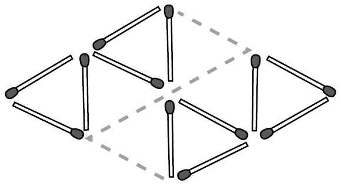
变来变去的三角形
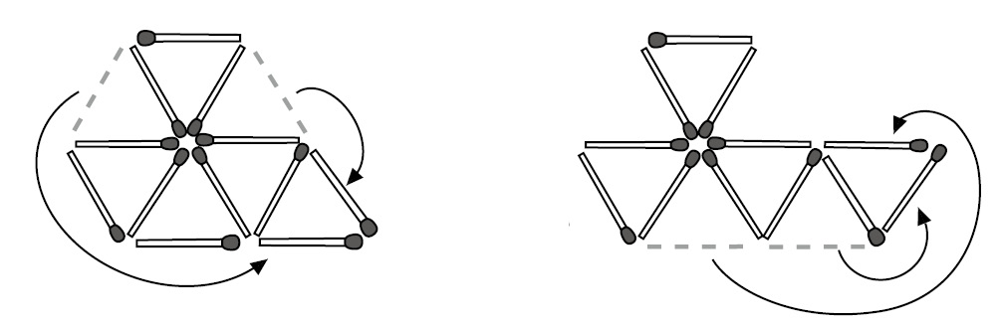
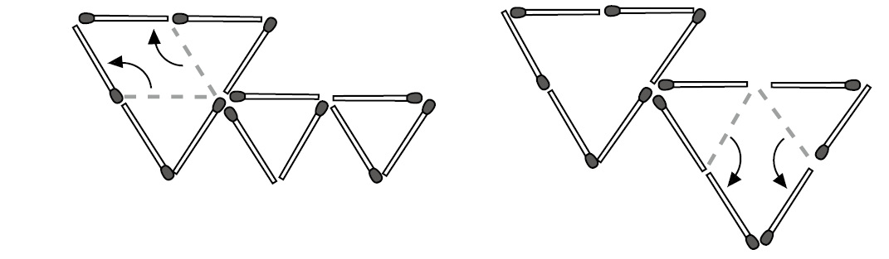
增加三角形的个数
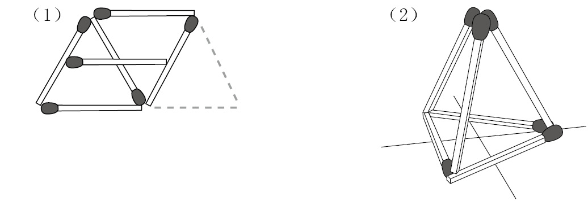
如何才能彼此接触
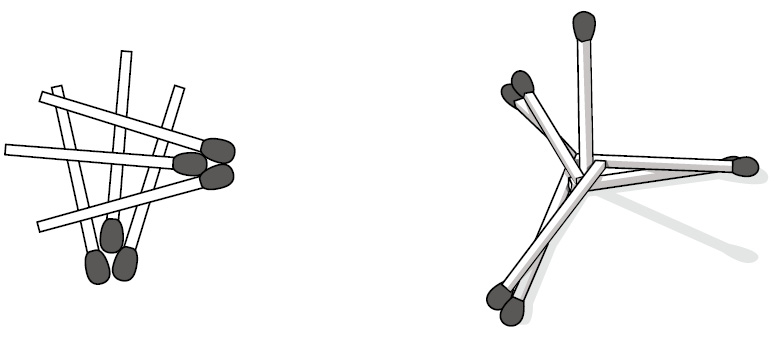
点对点
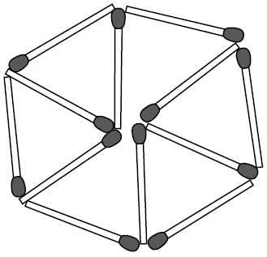
两个封闭区域
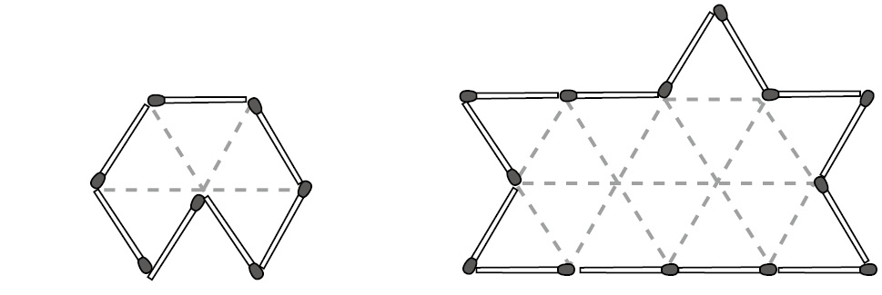
折叠邮票
要将这些邮票折叠成1–5–6–4–8–7–3–2的次序，可以采用以下方法：
第1步：对折，使6号与7号背对背，然后将食指和大拇指放在6号和7号的正面，把它们用力捏到一起。
第2步：伸出另一只手，将4号的正面折向8号的正面。用食指和大拇指将这两枚邮票捏到一起。
第3步：弯曲4号和8号，并让它们穿插到6号与7号之间。此时，我们已经把6号、4号、8号、7号邮票排成了正确的先后次序。
第4步：把包含1号、2号、5号、6号的这个部分抚平，然后将5号的正面折向6号的正面。至此，问题就解决了。
杜德尼称，要折叠成1–3–7–5–6–8–4–2这个次序，“难度更大。有人认为做不到，因此没有仔细考虑。但是根据‘我发现的一条定律’，这肯定能实现”。
第1步：沿着中间那条水平线，将整联邮票对折，使1、2、3、4号正面朝上，5、6、7、8号正面朝下。
第2步：将5号的正面折向6号的正面。
第3步：将一个大拇指放在1号上，食指放在2号上，捏住邮票。用另一只手捏住这联邮票的另一端，即8号和4号，并使8号朝上、4号朝下。下面的折法需要技巧：将8号与4号从1号与5号中间穿过，并继续向前，穿插在6号与2号之间，从而使3号和7号位于1号与5号之间。任务完成！
4张邮票
我们可以通过下列方式从整联邮票中撕下4张：
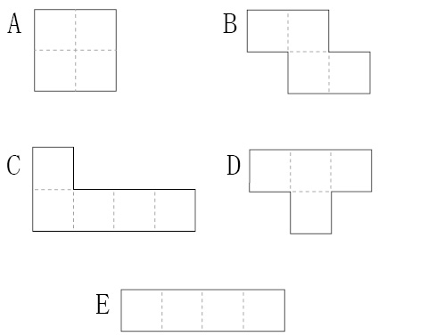
在统计不同形状时，必须非常小心，所有的方位与旋转方向都不能遗漏。
形状A有6种构成方式。
上图所示的形状B有4种构成方式，旋转90度后还有3种构成方式。将这个形状沿垂直轴翻转，使之由Z形变成S形，就会增加4种构成方式。将这个S形旋转90度后，构成方式又增加了3种。因此，形状B一共有14种构成方式。
上图所示的形状C有4种构成方式，旋转90度后有3种构成方式，旋转180度后有4种构成方式，旋转270度后有3种构成方式，共计14种。与形状B一样，将C沿垂直轴翻转后，又会得到14种构成方式。因此，形状C一共有28种构成方式。
上图所示的形状D有4种构成方式，旋转90度后有3种构成方式，旋转180度后有4种构成方式，旋转270度后有3种构成方式，因此D一共有14种构成方式。
E只有3种构成方式。
因此，解决方案共有6 + 14 + 28 + 14 + 3 = 65种。
支离破碎的棋盘
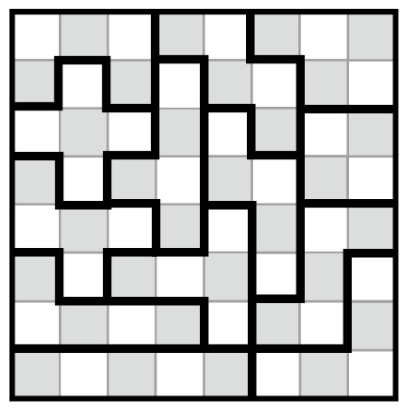
折立方体
只要在第4个、第6个方格之后将这张纸对折，就可以轻松地折出立方体。
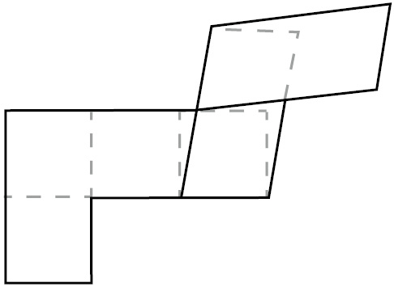
不可思议的辫子
本题有多种解法，最快的方法是让这三股塑料条相互缠绕两次，童子军的领带皮环就使用了这个方法。本书不准备做详细介绍，大家可自行尝试，也能编出符合题意的辫子。（感兴趣的读者还可以上网搜索解法。）
我之所以喜爱这道题，是因为我们根据常识就可以编好这根辫子。实际上，这道题最方便的解法十分简单，一旦掌握之后，你就会认为解开这道题简直是小菜一碟。现在，大家需要做的就是按照下面的指示，一步一步地完成。
我想大家应该都会编辫子——先把左边那股从上方绕过中间那股，再把右边那股从上方绕过中间那股，然后依次是左边、右边、左边、右边……如下图所示，1先绕过2，然后3绕过1（此时3位于中间）；接下来，让2（位于左侧）绕过3（位于中间），以此类推。
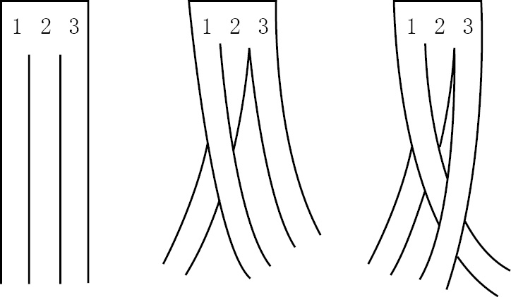
我说过，这3股辫子要缠绕6次，这个提示信息很重要。我们暂且忽略这3股塑料条的头尾两端都连接在一起的事实。我们从上端开始，先让1绕过2，然后让3绕过1，再重复4次，总共绕了6次。（只有心灵手巧的人才能完成这项工作。因此我建议大家使用塑料条，而不是容易断裂的纸条。）用大拇指和食指捏住第6个相交的位置，此时整个塑料条就是下面这种杂乱无章的模样。
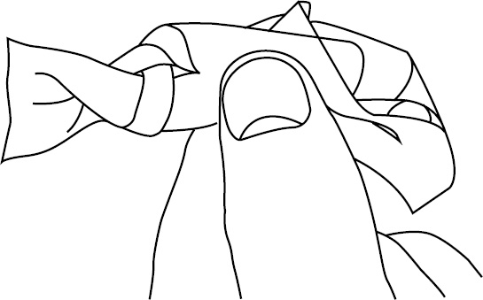
塑料条之所以变成这副模样，是因为我们在上端编辫子的时候，下端就会发生与之相反的扭曲变化。绕了6次之后，我的拇指左侧的塑料条已经变成了题目要求的辫子，但右侧塑料条却乱七八糟地缠绕在一起。
现在该怎么办呢？当然是用另一只手将右侧的塑料条理顺。让右端从那一堆塑料条绳结中穿过，连续几次之后，绳结就会被彻底解开。理顺辫子中的3股塑料条，使之变得平整。至此，我们就编好了这条不可思议的辫子。
这个解法谈不上简洁，但实用有效。看到问题后的第一反应有时就是正解，题目要求我们编辫子，我们就编辫子！